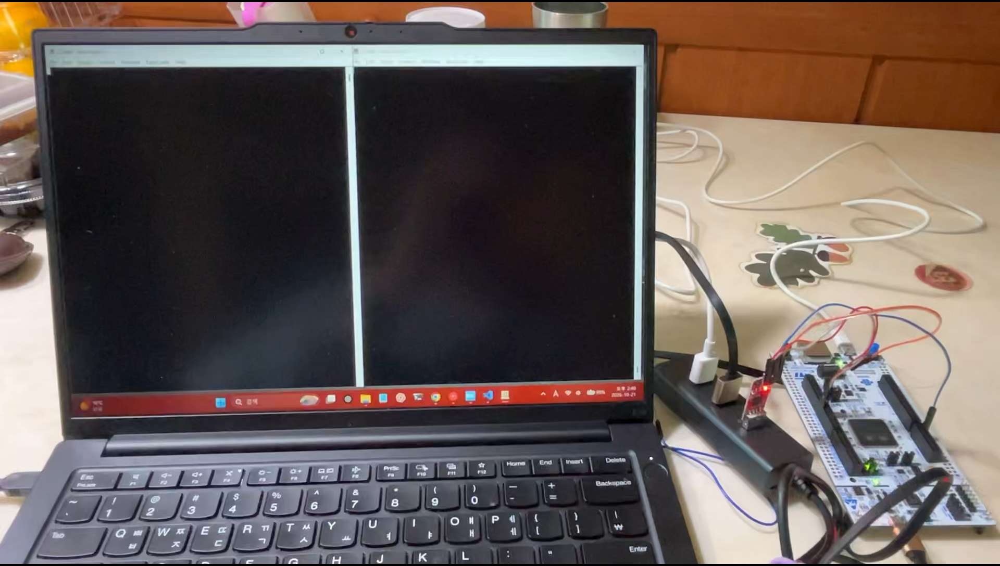
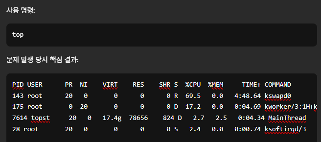
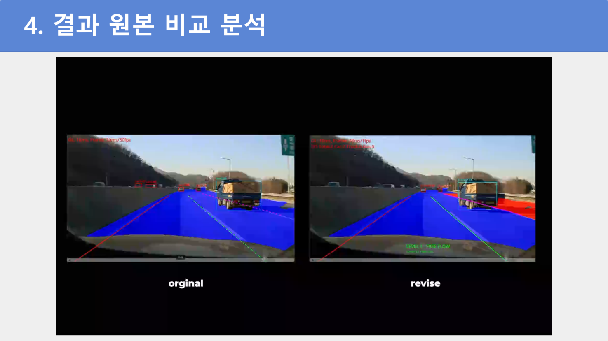

01 · PERSONAL PROJECT
Educational Firmware
USB CDC, DMA 기반 UART와 내부 Flash를 계층형 구조로 구현하고 긴 데이터 전송 중 발생한 통신 정지 원인을 추적했습니다.
상세 과정 보기 →EMBEDDED SOFTWARE DEVELOPER
STM32 펌웨어와 임베디드 Linux 환경에서 통신, RTOS, 보드 제어와 시스템 문제 분석을 경험한 신입 개발자 김하영입니다.
PROJECTS
프로젝트를 진행한 순서대로 배치했습니다. 각 프로젝트의 문제, 역할, 해결 방법과 결과를 한 화면에서 먼저 확인하고 상세 과정으로 이어갈 수 있습니다.

01 · PERSONAL PROJECT
USB CDC, DMA 기반 UART와 내부 Flash를 계층형 구조로 구현하고 긴 데이터 전송 중 발생한 통신 정지 원인을 추적했습니다.
상세 과정 보기 →처음에는 강의 예제를 따라가는 데도 시간이 걸렸습니다. HAL 코드와 데이터시트를 대조하며 초기화 과정에서 어떤 레지스터를 설정하는지 살펴봤습니다.

02 · PERSONAL PROJECT
PC 자원 정보를 UART로 전달하고 STM32 LCD에 실시간 그래프로 시각화했습니다. 데이터 수집부터 MCU 수신·저장·출력까지 개인 구현했습니다.
상세 과정 보기 →혼자 뭔가 만들어보고 싶었지만 아이디어가 쉽게 떠오르지 않았습니다. 그래서 PC 사용량을 STM32 화면에 띄우는 작은 프로젝트부터 시작했습니다.

03 · SYSTEM DEBUGGING
로그와 프로세스 상태를 함께 살펴 임베디드 Linux 시스템의 메모리 압박을 주요 원인으로 좁히고 변경 전후 상태를 비교했습니다.
분석 과정 보기 →화면 멈춤과 SSH 연결 끊김을 겪으면서, 애플리케이션 코드뿐 아니라 메모리 사용량과 시스템 로그까지 살펴볼 수 있게 되었습니다.

04 · TEAM PROJECT
객체 추적 데이터를 연결해 차량 카운터를 구현하고, 중복 집계와 누락 현상의 원인 및 개선 방향을 분석했습니다.
기여 내용 보기 →팀 프로젝트에서 기존 데이터 파이프라인을 파악하고, 저희 코드가 동작하려면 어느 단계에 연결해야 할지 고민했습니다.

05 · PERSONAL PROJECT
QEMU ARM64 환경에서 Device Tree 기반 플랫폼 드라이버와 문자 디바이스를 구현하고, 시스템 정보와 장치 이벤트를 처리하는 멀티스레드 프로그램까지 연결했습니다.
상세 과정 보기 →원하는 직무에 가까운 프로젝트를 혼자 해보기까지 오랜 시간이 걸렸습니다. SoC·BSP에 가까운 일을 직접 해보고 싶어 QEMU에서 ARM64 Linux를 부팅하고, Device Tree와 커널 드라이버, 사용자 공간 프로그램을 연결했습니다.
TECHNICAL SKILLS
단순한 기술 이름보다 실제로 어디에 사용했는지를 함께 정리했습니다.
STM32 HAL 기반 주변장치 제어, 내부 Flash 읽기·쓰기, 인터럽트와 DMA 기반 데이터 처리
UART와 USB CDC 통신, 프레임 경계가 있는 텍스트 프로토콜과 수신 버퍼 구성
FreeRTOS 태스크 시그널링, ISR 책임 분리, 데이터 처리와 화면 출력 흐름 구성
Serial·Kernel Log와 시스템 자원을 관찰하고 가설을 세워 원인을 단계적으로 좁히는 경험
STM32CubeIDE · STM32CubeMX · VS Code · Git · GitHub · Python · Ubuntu · WSL2 · Oracle VM VirtualBox · MobaXterm
ABOUT
문서와 소스 코드를 직접 확인하고 함수 호출과 데이터 흐름을 따라갑니다. 오류를 재현 가능한 단위로 나누고 관찰한 결과를 바탕으로 원인을 좁혀, 기능 구현을 넘어 시스템이 동작하는 이유를 설명할 수 있는 개발자를 목표로 합니다.